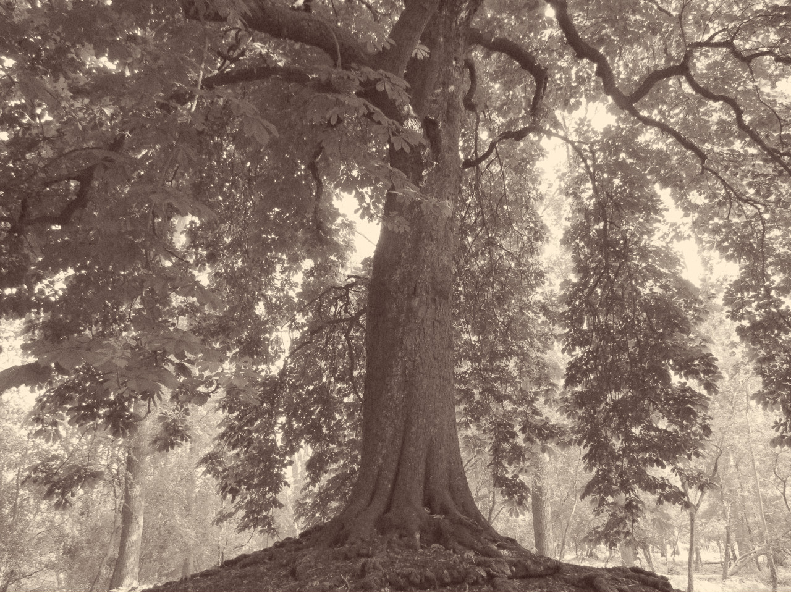
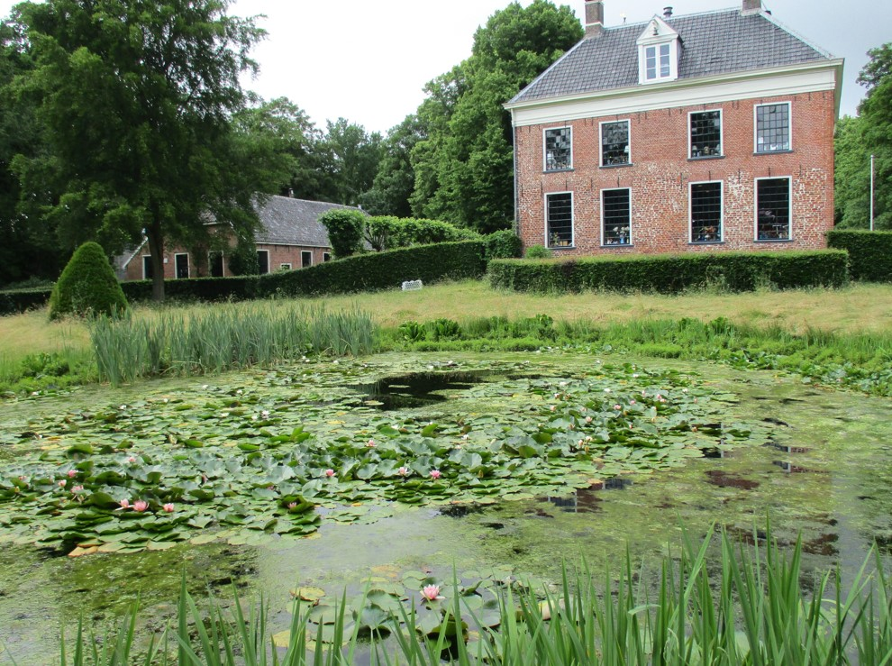
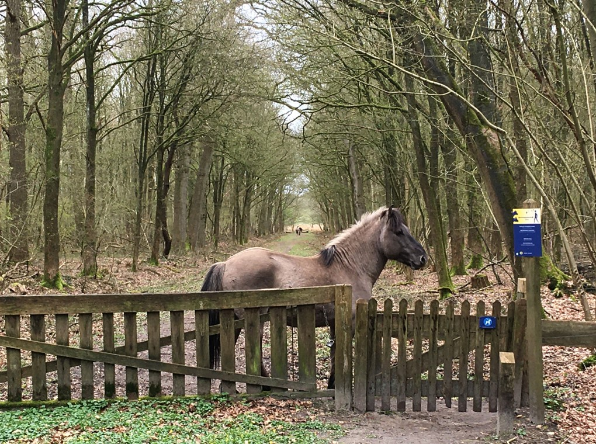
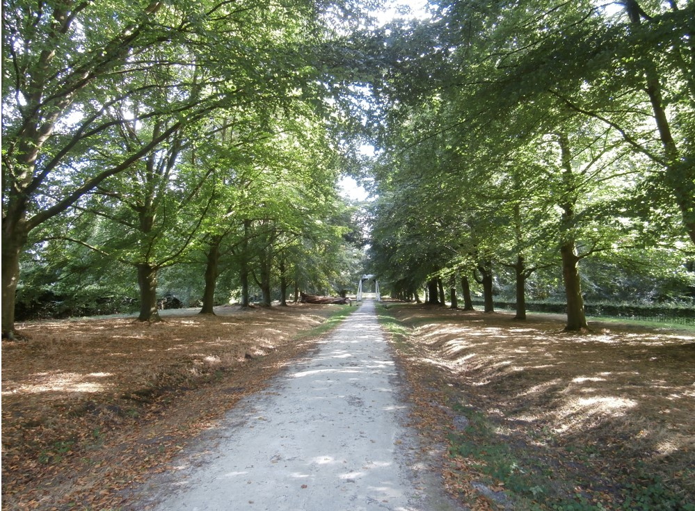
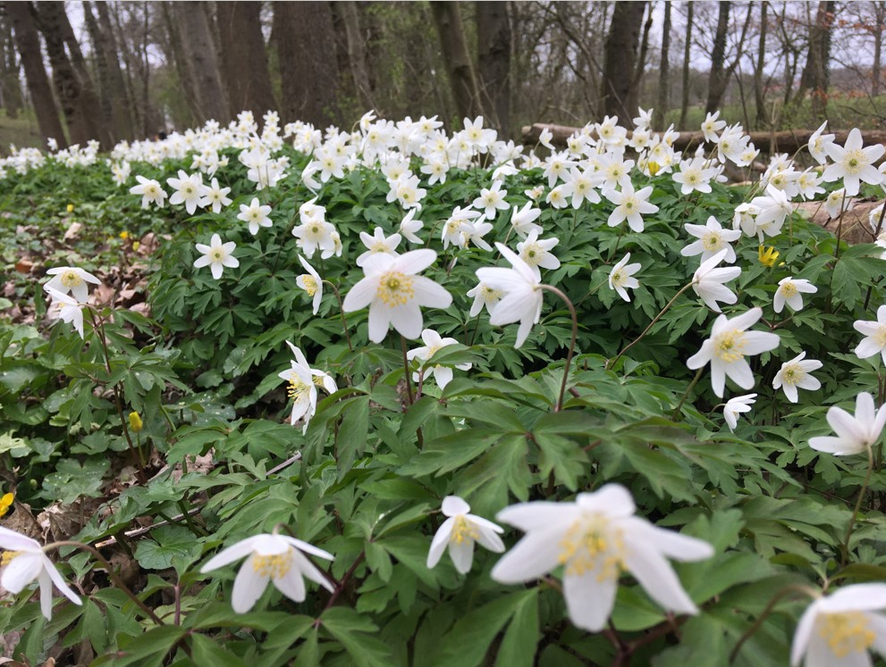
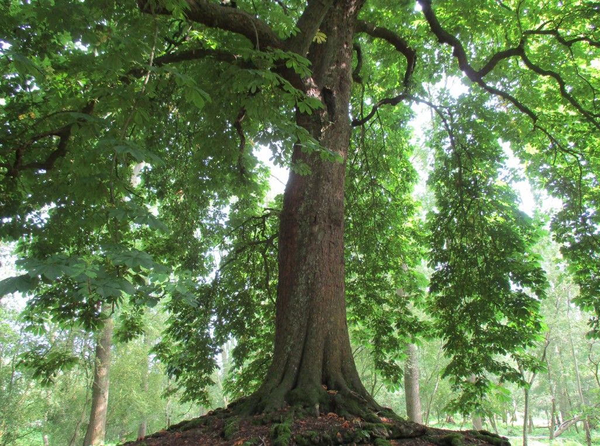
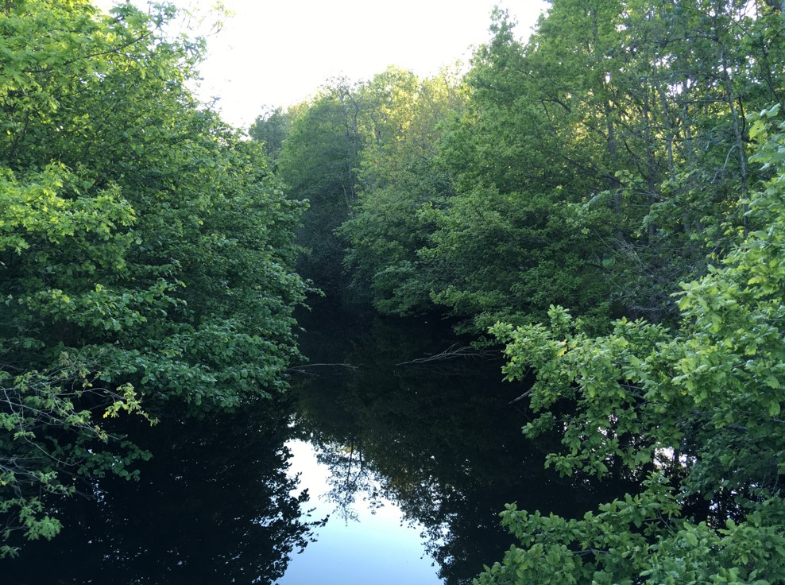

Landgoed Ennemaborg
Het landgoed
Impressie
Praktische info
Impressie van de Ennemaborg en het Midwolder Bos
  
  
Foto's zijn gemaakt door Sanne P.
Informatie over de bosuil en zijn roep (deze uil is ook bij de Ennemaborg te zien en te horen)
Dit fragment is afkomstig van
Natuurpunt